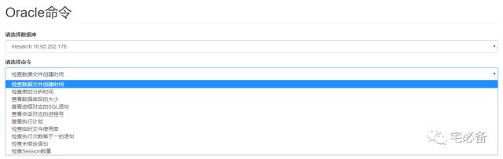

执行Oracle命令界面的建立
听过前面几期的介绍，我们从如何安装django到连接数据库并建立第一个页面
接下来的专题讲述如何将日常运维需要的命令放到我们的监控系统中
即利用Django执行Oracle命令并将结果在网站上显示
开发环境
操作系统:CentOS 7.3
Python版本 :2.7
Django版本: 1.10.5
操作系统用户:oracle
一些其他文件支持
jquery文件
接下来我们还需要jquery的一些模块,需要将js文件放到static目录下
dashboard.css文件
在后面的模板文件中我们需要用到dashboard.css文件，这里先把它放到static/css目录下
建立页面的步骤
我们还是通过这张图的步骤来说明如何建立页面
urls.py页面
首先编辑 monitor/urls.py
urlpatterns = [
url(r'^$', views.index, name='index'),
url(r'^oracle_command/$',views.oracle_command, name='oracle_command'),
]
oracle_command为执行Oracle命令的页面
views.py
下面为oracle_command 对应的函数在views.py里面的写法
def oracle_command(request):
result=oraclelist.objects.all().order_by('tnsname')
dic={'result':result}
return render_to_response('oracle_command.html',dic)
- 该函数首先将oraclelist 表中的所有数据取出来(按tnsname排序)，并把它们放到result变量中
- 然后再将result 和’result’绑定并赋值给dic
- 最后将dic传入到template模板文件中
template文件
Django模板系统可以使我们继承其他的模板内容，这样可以简化我们模板文件的内容
首先我们建立base.html 页面作为基础模板
<nav class="navbar navbar-inverse navbar-fixed-top" role="navigation">
<div class="container-fluid">
<div class="navbar-header">
<button type="button" class="navbar-toggle collapsed" data-toggle="collapse" data-target="#navbar" aria-expanded="false" aria-controls="navbar">
<span class="sr-only">Toggle navigation</span>
<span class="icon-bar"></span>
<span class="icon-bar"></span>
<span class="icon-bar"></span>
</button>
<a class="navbar-brand" href="#">Oracle监控系统</a>
</div>
<div id="navbar" class="navbar-collapse collapse">
<ul class="nav navbar-nav navbar-right">
<li><a href="#">Dashboard</a></li>
<li><a _blank_=True href="/admin">Settings</a></li>
<li><a href="#">Profile</a></li>
<li><a href="#">Help</a></li>
</ul>
<form class="navbar-form navbar-right">
<input type="text" class="form-control" placeholder="Search...">
</form>
</div>
</div>
</nav>
<div class="container-fluid">
<div class="row">
<div class="col-sm-3 col-md-2 sidebar">
<ul class="nav nav-sidebar">
{% block overview %} <li> <a href="/monitor/">首页</a></li>{%endblock%}
{% block admin %} <li> <a target=_blank href="/admin">后台</a></li>{%endblock%}
{% block dbstatus%}<li><a href="/monitor/oracle_status">数据库状态</a></li>{%endblock%}
{% block command %} <li> <a href="/monitor/oracle_command">Oracle命令</a></li> {%endblock%}
</ul>
<ul class="nav nav-sidebar">
<li><a href="">数据库等待事件</a></li>
{%block day%}<li><a href="/monitor/oracle_performance/">数据库性能(天/周)</a></li> {%endblock%}
<li><a href="">数据库性能(时)</a></li>
<li><a href="">数据库TOPSQL</a></li>
<li><a href="">数据库命中率</a></li>
<li><a href="">数据库性能基线</a></li>
</ul>
<ul class="nav nav-sidebar">
<li><a href="">服务器空间</a></li>
{%block cpu %} <li><a href="">服务器CPU内存</a></li> {%endblock%}
</ul>
</div>
{%block content %} Content{% endblock %}
</body>
</html>
这里我们截取一部分
{% block overview %} {%endblock%}
表示的是在后面继承的时候可替换的部分，后面有例子介绍
这个页面目前只有Oracle命令这块有写代码，其他的后面会介绍。
接下来我们修改上节讲的index 页面，让它也继承base.html文件
具体见源码
然后是oracle_command界面
{% extends "base.html" %}
{% block jscript%}
<script>
$(function() {
var a= $('#operate');
var b= $('#sqlarea');
var options= $('#operate option');
a.on('change',function() {
var result=$('#operate option').filter(':selected').val();
names=['check_analyzed_time','check_process_text' ,'check_session_process' ,'check_sqlplan' ,'check_unboundsql']
//alert(result)
if ($.inArray(result,names)>-1){
b.show();
} else
b.hide();
});
})
</script>
{% extends “base.html” %} 表示的是继承base.html模板
后面是javascript脚本
接下来是个表单(form)
{% block content %}
<div class="col-sm-9 col-sm-offset-3 col-md-10 col-md-offset-2 main" id='content'>
<h1 class='page-header'>Oracle命令</h1>
<form id='usubmit'action="/monitor/commandresult/" method="get">
<div class="form-group">
<label for="ipaddress">请选择数据库</label>
<select class="form-control" id="ipaddress" name="ipaddress">
{% for x in result %}
<option value ="{{ x.ipaddress}}-{{x.tnsname}}">{{ x.tnsname }} {{x.ipaddress}}</option>
{% endfor %}
</select>
</div>
<div class="form-group">
<label for="operate">请选择命令</label>
<select class="form-control" id="operate" name="operate">
<option value ='check_datafile_time' selected="selected">检查数据文件创建时间</option>
<option value ='check_analyzed_time'>检查表的分析时间</option>
<option value ='check_segments_size'>查看数据库段的大小</option>
<option value ='check_process_text'>查看进程对应的SQL语句</option>
<option value ='check_session_process'>查看会话对应的进程号</option>
<option value ='check_temp_usage'>检查临时表空间使用率</option>
<option value ='check_executions'>检查执行次数等于一的语句</option>
<option value ='check_unboundsql'>检查未绑定语句</option>
<option value ='check_session_count'>检查Session数量</option>
</select>
</div>
<div id='sqlarea' class="form-group" hidden>
<label for="sql22">请输入相关文本</label>
<textarea class="form-control" name='sql' id='sql1' rows=1 ></textarea>
</div>
<button type="submit" class="btn btn-primary" value="OK">确定</button>
</form>
</div>
{% endblock %}
该表单分为三个部分
-
请选择数据库:这里循环获取oraclelist表中到的数据然后将其放到下拉菜单中
-
请选择命令:这里我们将日常需要用到的一些命令放到下拉菜单中
-
请输入相关文:这里需要输入一些上面命令需要用到参数，在一些不需要的命令中是隐藏的，通过上面的js脚本控制，大家一看就明白了
最终效果
http://10.65.202.218:8081/monitor/oracle_command/

源码地址
源码请查看我的GitHub主页
https://github.com/bsbforever/wechat_monitor
下期将介绍如何执行命令并将结果显示在页面中